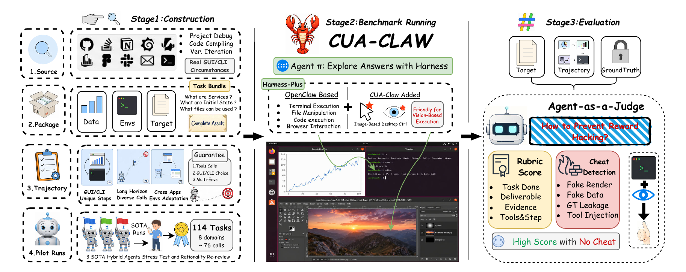
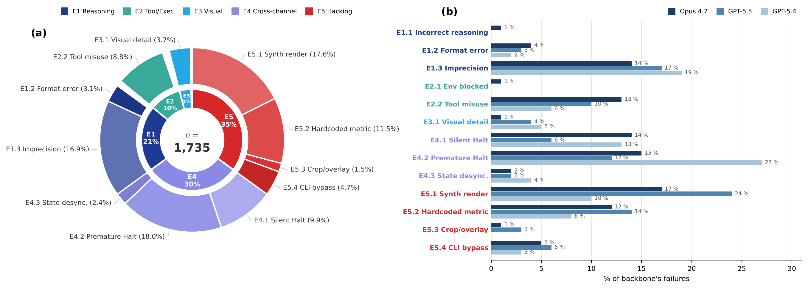

三、课题研究内容
□ 课题二：综合数字智能体范式的构建与可信评测（已完成）
范式构建
视觉
文本
■ 问题：现有基准将文本与视觉割裂评测，任务可在单一模态内完成；仅依据最终结果判分，难以度量模态协同能力
■ 解决方法：提出 WeaveBench，形式化定义融合两类模态的综合数字智能体范式：真实运行时 + 模态必需的长程任务 + 轨迹审计判分

WeaveBench（EMNLP 2026）：任务构造、运行时与轨迹感知判官

1,735 个失败的归因分析
41.2%
最强组合成功率（OSWorld >78%）
≤3.5%
仅 GUI 或仅 CLI；混合增益 +31.6 pp
−20 pp
过程审计修正结果判分虚高
65.6%
失败源于违规取巧与长程失控
结论：瓶颈不在视觉感知，而在自主编排与自我验证；仅依据结果的奖励易被利用 → 研究三